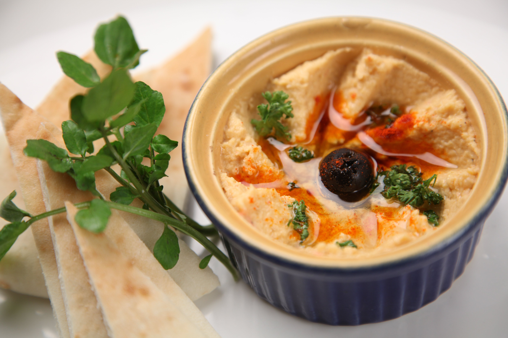

Houmous

Description
A yummy chickpea kind of paste and a
number one for dipping some nice naam or
any bread. A hand blender is needed for this
recipe, I actually defused one I had before,
so make sure it has the power to work on this.
Ingredients
- Cooked chickpeas
- Lemon
- Tahina
- Olive oil
- Salt
- Pepper
- Paprika
Steps
- Drain the chickpeas and add them too
vase where all ingredients will blend.
- Add tahina, just a spoonful, so the
flava is not too overpowering.
- Blend and pour some olive oil so mixture
is a bit runny, but not too much, I
like my houmous creamy.
- Time for the seasoning, so a pinch of salt, pepper
and a few drops of lemon to bring
those flavas together.
- Dust a bit of paprika on top when serve.